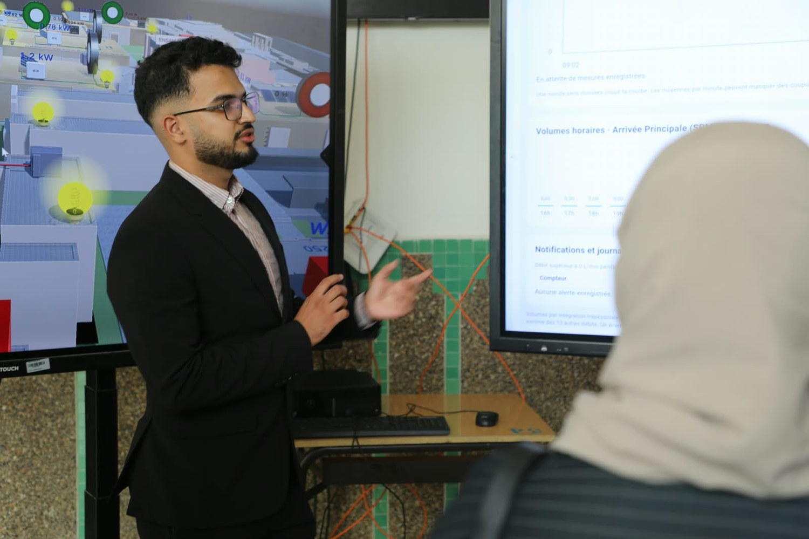

ENSAM · En cours
Suivi énergétique du campus
Centralisation des mesures électriques du campus ENSAM pour suivre la consommation et préparer la supervision énergétique.
Voir les détails du projet
- Objectif
- Préparer le suivi de la consommation électrique du campus ENSAM.
- Réalisation
- Le projet prévoit de centraliser les mesures issues des centrales de mesure, des onduleurs et de l’énergie fournie par les transformateurs.
- Fonctionnement
- Des convertisseurs Modbus RTU/TCP assurent l’interconnexion avec une passerelle Raspberry Pi.
- Résultat ou état
- Projet en cours. La centralisation des données prépare leur supervision énergétique.
- Centrales, onduleurs et transformateurs
- Modbus RTU/TCP
- Collecte sur Raspberry Pi